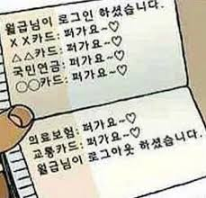
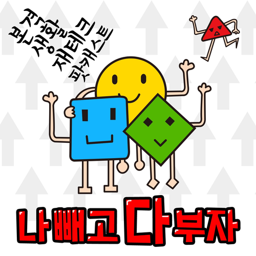

"재태크. 하면 좋다는 건 알지만 하기 망설여지는건 이유가 있었다. 돈도 얼마 없는데 고작 이 돈으로 뭘하지..?"
"얼마 전 비트원 대표님의 강의를 잠깐 들었었다. 그리고 관심이 있었지만 사라진 재태크에 다시 관심이 조금 생겼다! 그리고 여기저기서 들었던 것들의 생각해보았다. "
"유튜브에서 예전에 이런 거를 유튜브 알고리즘에 의해 의도치않게 접한 적이 있었는데, 만원도 나눠서 투자한다고 한다!"

"그래서 작업 안할때 잠깐 알아보았던 정보들을 정리해보았다."
"1. 벼락부자 꿈꾸는 망상적 재태크는 하지 말자.
2. 목돈이 필요할 땐 손해 없이 해약할 수 있는 단기금융상품에 가입하자.
3. 청년우대형청약통장을 만들자.
4. 수수료가 높은 저축성 종신보험에 가입했다면 해약하자."
청년 재태크 지원제도
정책적으로도 다양한 제도를 활용해 청년들의 지원해주고 있었다.